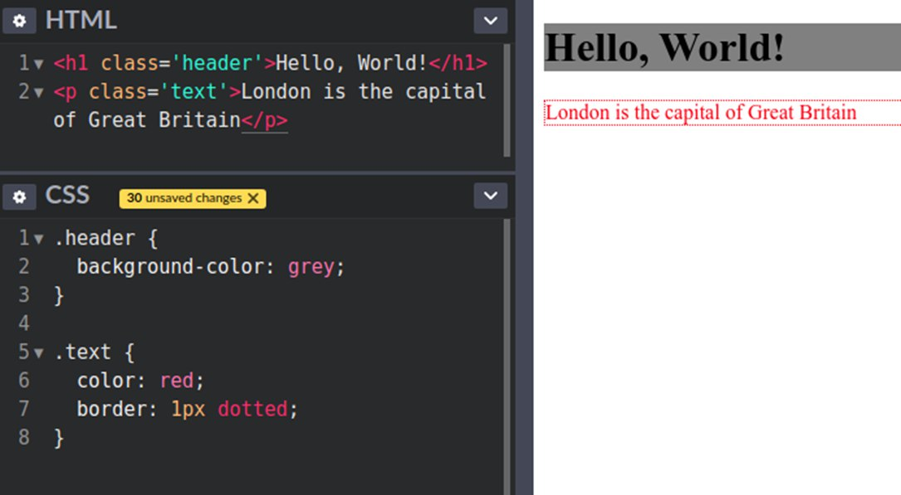
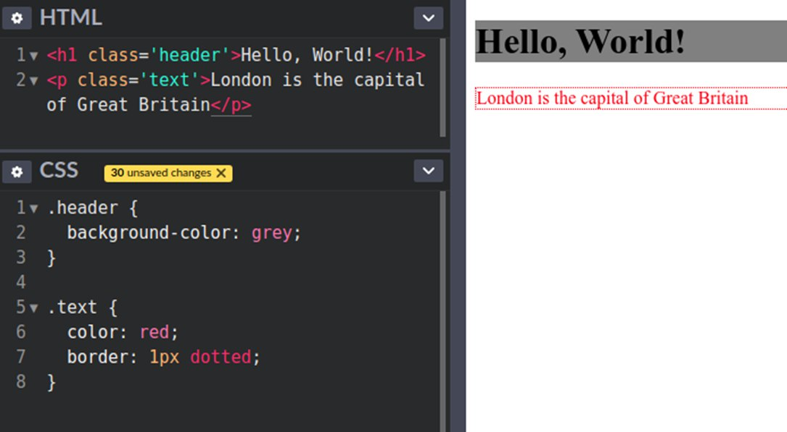

Css
CSS-стильдерді сипаттау тілі. Аббревиатура ағылшын тіліндегі Cascading Style Sheets-каскадты стиль кестелерінің алғашқы әріптерінен пайда болды. CSS HTML элементтерінің көрінісін сипаттайды. Яғни, каскадты стиль кестелерін қолданатын әзірлеушілер беттегі осы немесе басқа элементтің қалай көрінетінін анықтайды. "Каскадты стиль кестелері" терминін Хаакон Ли 1994 жылы ұсынған. Берт Боспен бірге ол CSS ті дамыта бастады
 
